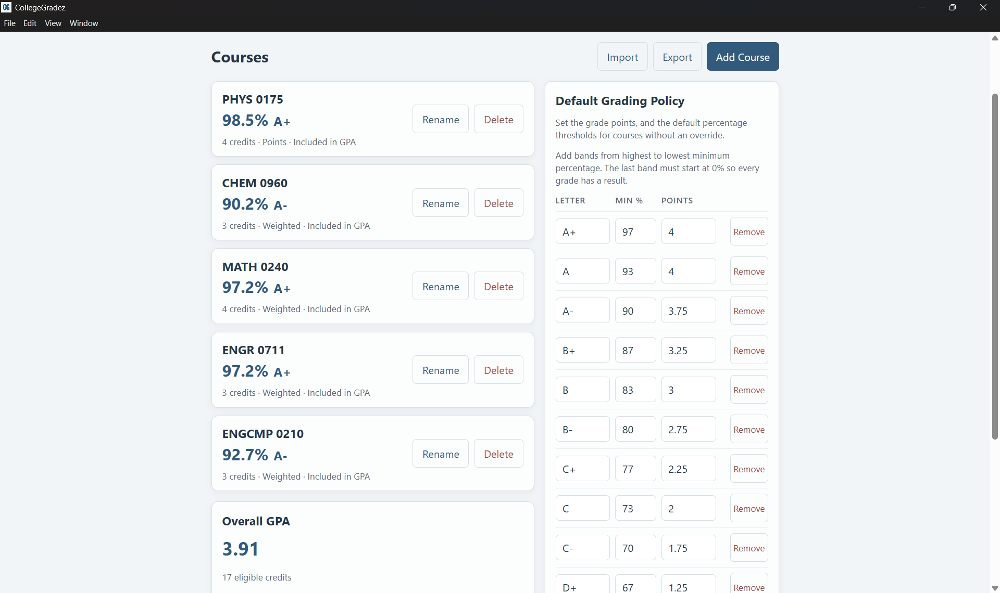

CollegeGradez
A college grade calculator that is hopefully better than a spreadsheet
Download for WindowsBeta · v0.3.0-beta.1 · Free & open source
Heads up: the installer isn't code-signed yet, so Windows SmartScreen may show a warning. Choose More info → Run anyway if the download came from this project's GitHub Releases.

What it does
-
Courses, categories, assignments
Track everything for every course in one place.
-
Weighted or points-based
Calculate grades either way, and drop the lowest scores in a category.
-
Live grades and GPA
See course grades and a credit-weighted GPA update as you type. Incomplete courses are flagged, never counted as zero.
-
Your grading policy
Set custom thresholds, letters, and grade points, with per-course overrides.
-
Local-first and private
No account and no telemetry. Your data stays on your computer.
-
Backups and export
Automatic timestamped backups, plus JSON export and import to move your data.